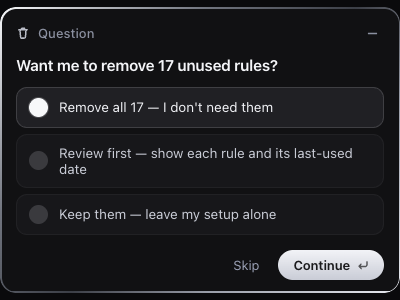

Question card
Question
Want me to remove 17 unused rules?
Radio select → Continue arms → a white bloom fires on confirm.
Thinking
Cursor's reasoning row: spinning silver arc over a shimmering label, then the tool-use checklist settles row by row.
Code block
input-demo.html
Writing
Lines paint one at a time behind a caret; the status flips Writing → Complete.
Task complete

Removed the rainbow bloom on the Continue button
Task complete
Swapped the conic gradient for a flat white glow across three files, then committed and pushed it to the live page.
Thumbnail on the left, title top-right, description under — silver outline, with a sheen crossing the thumbnail on each pass.